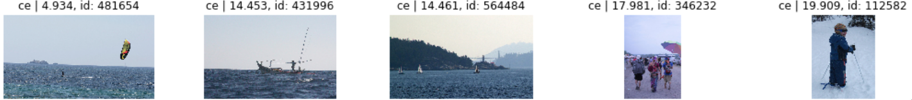

- Sun 31 May 2020
- howto
- #full-text search, #information retrieval, #image processing
In this article we will see how to use Apache Solr for an unusual use case: we will not use it for text search but, rather, for content-based image retrieval. In other words, we will use Solr to search for images by using... images! We will use a Solr plugin based on the LIRE project, a Java library for image retrieval based on color and texture features powered by a Lucene index.
Setup
For our image search engine, we will need:
- a recent version of Solr (at least 7.5.0) running either in standalone or in SolrCloud mode;
- the LIRE Solr plugin built and ready to be added to Solr;
- a dataset of images.
I would also recommend to use Python as a simple means to both serve local images via HTTP (for URL-based image search) and to visualize query results; anyway, all the examples can be translated to any other language that has libraries for HTTP requests and image visualization.
Solr
If you do not have Solr already up and running, the easiest thing to do is to:
- download it from the download page (at the time of writing, the most recent version is 8.5.1);
-
uncompress it:
$ tar zxvf solr-8.5.1.tgz
-
start it in standalone mode:
$ solr-8.5.1/bin/solr start
or in SolrCloud mode:
$ solr-8.5.1/bin/solr start -c
From now on, I will assume that Solr 8.5.1 is installed in the /opt/solr directory and is running in SolrCloud mode.
LIRE Solr plugin
The LIRE Solr plugin can be built by cloning the original repository:
$ git clone https://github.com/dermotte/liresolr
The current version of the plugin will not work if we use a version of Solr higher than 8.3; in this case we can use the code from my PR instead:
$ git clone https://github.com/nvitucci/liresolr/
$ git checkout update-solr-8
We can then build it:
$ cd liresolr
$ ./gradlew distForSolr
The JAR files will be created under the dist folder. Once created, they have to be copied into /opt/solr/server/solr-webapp/webapp/WEB-INF/lib/ and Solr has to be restarted.
Image dataset
Many image datasets have been created for image processing and computer vision applications. We will use the Common Objects in Context (COCO) dataset since it has not been used with LIRE before and contains a reasonable amount of images along with categories and annotations. All the datasets and versions can be downloaded from here; we will only download and uncompress the 2014 validation dataset:
$ mkdir /data/mscoco/val2014
$ cd /data/mscoco/val2014
$ wget http://images.cocodataset.org/zips/val2014.zip
$ unzip val2014.zip
(Here I am using /data as a root directory, which may require sudo rights to write to. Any directory can be used in its place.)
Indexing
In order to create an index of the images, we need to extract some visual features and represent them as feature vectors. Many features have been proposed in the computer vision and image processing literature; broadly speaking, features can be classified as global when they describe global image properties (colors, edge histograms, etc.), and local when they describe small regions of an image (corners, edges, etc.). The features that LIRE can extract belong to both categories, but we will focus on the ones that are readily available in the Solr plugin as well (although other can be easily added), namely:
- MPEG-7 visual descriptors:
- ScalableColor;
- ColorLayout;
- EdgeHistogram;
- PHOG (Pyramid Histogram of Oriented Gradients);
- CEDD (Color and Edge Directivity Descriptor);
- FCTH (Fuzzy Color and Texture Histogram);
- JCD (Joined Composite Descriptor, combines CEDD and FCTH);
- ACCID (combines scaled edge and fuzzy color histograms);
- AutoColorCorrelogram (color-to-color correlation histogram);
- simple joint histogram (combines 64-bin RGB and pixel rank);
- opponent histogram (simple color histogram in the opponent color space);
- fuzzy opponent histogram (fuzzy color histogram in the opponent color space);
LIRE provides methods to:
- encode these features as Base64-encoded strings;
- extract hashes that represent the features via bit sampling);
- create reference objects to use with a distance function to enable nearest-neighbour search in metric spaces.
The hashes and the reference objects can be used to speed up search by restricting the search space; the candidate results returned by this phase are then re-ranked using the actual encoded feature vectors and a distance function associated with each feature. More details can be found in the LIRE documentation.
Extracting the image features
Once we have decided what features to use, we can use the ParallelSolrIndexer class to extract them and save them in an XML file:
$ find /data/mscoco/val2014 -name "*.jpg" > val2014.txt
$ java -cp dist/lire.jar:liresolr/dist/liresolr.jar net.semanticmetadata.lire.solr.indexing.ParallelSolrIndexer -i val2014.txt -o val2014_all_plus_ms.xml -a -y "oh,sc,ce,fc,ac,ad,fo,jh"
where we specify:
-i: the file containing the list of image files to process;-o: the output XML file;-a: an option to include both the bit sampling and the metric space representations;-y: the additional features to extract in addition to the default PHOG, ColorLayout, EdgeHistogram and JCD (check the README file for a list of all the abbreviations).
The XML file now contains a list of documents that can be indexed.
Loading the feature documents
Before we can load the features, we need to create a Solr index that can make use of them (and that exposes a LIRE request handler); we basically need text fields to index the hashes and the reference points and a special binary DocValues field to hold the encoded features. To make it simple, we can create a lire-config folder as a copy of the _default configuration from /opt/solr/server/solr/configsets/_default/, then update the managed-schema in the new configuration by adding these lines:
<field name="title" type="text_general" indexed="true" stored="true" multiValued="true"/>
<fieldtype name="binaryDV" class="net.semanticmetadata.lire.solr.BinaryDocValuesField"/>
<dynamicField name="*_ha" type="text_ws" indexed="true" stored="false"/>
<dynamicField name="*_ms" type="text_ws" indexed="true" stored="false"/>
<dynamicField name="*_hi" type="binaryDV" indexed="false" stored="true"/>
and solrconfig.xml by adding these lines:
<requestHandler name="/lireq" class="net.semanticmetadata.lire.solr.LireRequestHandler">
<lst name="defaults">
<str name="echoParams">explicit</str>
<str name="wt">json</str>
<str name="indent">true</str>
</lst>
</requestHandler>
<valueSourceParser name="lirefunc" class="net.semanticmetadata.lire.solr.LireValueSourceParser" />
Then, we can create the collection:
$ solr create_collection -c lire_mscoco_val2014 -d lire-config
and load the XML file that we created before:
$ curl http://localhost:8983/solr/lire_mscoco_val2014/update -H "Content-Type: text/xml" --data-binary @val2014_all_plus_ms.xml
If the file is too large, it can be split in parts and each part be fixed and uploaded separately:
$ split -d -l 11000 val2014_all_plus_ms.xml val2014_all_plus_ms_
$ echo "</add>" >> val2014_all_plus_ms_00
$ echo "</add>" >> val2014_all_plus_ms_01
$ echo "</add>" >> val2014_all_plus_ms_02
$ sed -i '1s/^/<add>/' val2014_all_plus_ms_01
$ sed -i '1s/^/<add>/' val2014_all_plus_ms_02
$ sed -i '1s/^/<add>/' val2014_all_plus_ms_03
$ curl http://localhost:8983/solr/lire_mscoco_val2014/update -H "Content-Type: text/xml" --data-binary @val2014_all_plus_ms_00
$ curl http://localhost:8983/solr/lire_mscoco_val2014/update -H "Content-Type: text/xml" --data-binary @val2014_all_plus_ms_01
$ curl http://localhost:8983/solr/lire_mscoco_val2014/update -H "Content-Type: text/xml" --data-binary @val2014_all_plus_ms_02
$ curl http://localhost:8983/solr/lire_mscoco_val2014/update -H "Content-Type: text/xml" --data-binary @val2014_all_plus_ms_03
or, obviously, it can be uploaded using the Solr API with any programming language.
Finally, we can issue a commit:
curl http://localhost:8983/solr/lire_mscoco_val2014/update -H "Content-Type: text/xml" --data-binary "<commit/>"
The image index is now ready for search.
Image search
Once the images are indexed, the search can be performed using the /lireq request handler in three different ways:
- by image ID using the
idrequest parameter (to use images from the same index); - by URL using the
urlparameter (to use external images); - by feature histogram and hashes using the
featureandhashesparameters (with both manually extracted or obtained via another call tolirequsing theextractparameter).
Here are some examples using Python with requests and matplotlib, and using the image COCO_val2014_000000481654.jpg as an example:
The easiest way to serve the images via HTTP is to launch a simple HTTP server from their directory with Python:
$ cd /data/mscoco/val2014
$ python -m SimpleHTTPServer
All the following examples are completely implemented and collected in a Jupyter notebook in the Apothem resources repository.
Search by images
In a separate console, or on a Jupyter notebook, we can:
-
search by ID:
res = requests.get(f'http://localhost:8983/solr/lire_mscoco_val2014/lireq', params={ 'fl': '*,score', 'accuracy': 0.99, 'rows': 20, 'id': f'/data/mscoco/val2014/COCO_val2014_000000481654.jpg', 'field': 'ce' })
-
search by URL:
res = requests.get(f'http://localhost:8983/solr/lire_mscoco_val2014/lireq', params={ 'fl': '*,score', 'accuracy': 0.99, 'rows': 20, 'url': f'http://localhost:8000/COCO_val2014_000000481654.jpg', 'field': 'ce' })
Here the accuracy parameter is the fraction of hashes that are used in a query, with a maximum of 1 being all hashes; the field is set to ce for the CEDD descriptor, but ce_ha would be the same, since we are using the bit sampling hashes.
Note: a search by ID and URL on the same image may give different results because the two methods are implemented slightly differently. This may be a bug.
In both cases we can collect the results as JSON and inspect them :
j_res = res.json()
print(json.dumps(j_res, indent=2))
{
"responseHeader": {
"status": 0,
"QTime": 755,
"params": {
"field": "ce",
"fl": "*,score",
"accuracy": "0.99",
"rows": "20",
"url": "http://localhost:8000/COCO_val2014_000000481654.jpg"
}
},
"DocValuesOpenTime": "0",
"RawDocsCount": "32931",
"RawDocsSearchTime": "183",
"ReRankSearchTime": "441",
"response": {
"numFound": 0,
"start": 0,
"docs": [
{
"score": 4.934342757604213,
"localimagefile": "/data/mscoco/val2014/COCO_val2014_000000481654.jpg",
"id": "/data/mscoco/val2014/COCO_val2014_000000481654.jpg",
"d": 4.934342757604213,
"title": "/data/mscoco/val2014/COCO_val2014_000000481654.jpg"
},
{
"score": 14.45337473741894,
"localimagefile": "/data/mscoco/val2014/COCO_val2014_000000431996.jpg",
"id": "/data/mscoco/val2014/COCO_val2014_000000431996.jpg",
"d": 14.45337473741894,
"title": "/data/mscoco/val2014/COCO_val2014_000000431996.jpg"
},
...
]
}
}
and visualize the top five results:
docs = j_res['response']['docs']
for i, d in enumerate(docs[0:5]):
filename = os.path.basename(d['id'])
img = requests.get(f'http://localhost:8000/{filename}', stream=True)
img_id = int(filename.split('_')[-1].replace('.jpg', '').lstrip('0'))
ax = fig.add_subplot(1, 5, i + 1)
ax.title.set_text(f"ce | {d['score']:.3f}, id: {img_id}")
ax.imshow(plt.imread(img.raw, format='jpg'))

Search by features
As mentioned before, we can extract the feature representation and the hashes using the extract parameter:
res = requests.get(f'http://localhost:8983/solr/lire_mscoco_val2014/lireq',
params={
'fl': '*,score',
'accuracy': 0.99,
'rows': 20,
'extract': f'http://localhost:8000/COCO_val2014_000000481654.jpg',
'field': 'ce'
})
In the result we'll see encoded feature as the histogram field with value 4ICAgICA..., and the hashes as the bs_list field with values "121", "c0a", "e5d", ..., with the actual bit sampling query (i.e. the number of hashes to be used as determined by the accuracy parameter) as the bs_query field with value 121 c0a e5d ...; the same applies for the metric spaces reference objects (fields ms_list and ms_query):
{
"responseHeader": {
"status": 0,
"QTime": 208,
"params": {
"extract": "http://localhost:8000/COCO_val2014_000000481654.jpg",
"field": "ce",
"fl": "*,score",
"accuracy": "0.99",
"rows": "20"
}
},
"histogram": "4ICAgICAgIC...",
"bs_list": [
"121",
"c0a",
"e5d",
...
],
"bs_query": "121 c0a e5d ...",
"ms_list": [
"R003429",
"R003219",
...
],
"ms_query": "R003429^1.00 R003219^0.96 ... "
}
Assuming we want to search for images similar to the one having histogram 4ICAgICA... and hashes "121", "c0a", "e5d", ... for the feature ce with accuracy 0.99, these API calls are equivalent:
-
with the
lireqhandler:res = requests.get(f'http://localhost:8983/solr/lire_mscoco_val2014/lireq', params={ 'fl': 'id,d', 'accuracy': 0.99, 'rows': 10, 'feature': '4ICAgICA...', 'hashes': '121 c0a e5d ...', 'field': 'ce' })
-
with the
selecthandler, usinglirefuncas a distance function for sorting:res = requests.get(f'http://localhost:8983/solr/lire_mscoco_val2014/select', params={ 'fl': 'id,d:lirefunc(ce, 4ICAgICA...)', 'accuracy': 0.89, 'rows': 10, 'q': 'ce_ha:(121 c0a e5d ...)', 'sort': 'lirefunc(ce, 4ICAgICA...) asc', 'field': 'ce_ha' })
The same applies if we want to use metric spaces instead of bit sampling, by replacing the hashes with the reference objects and adding the parameter 'ms': 'true' in the lireq handler call as in this example:
res = requests.get(f'http://localhost:8983/solr/lire_mscoco_val2014/lireq',
params={
'fl': 'id,d',
'accuracy': 0.99,
'rows': 10,
'feature': '4ICAgICA...',
'hashes': 'R003429 R003219 ...',
'field': 'ce',
'ms': 'true'
})
When using the select handler, we need to use the full field name (e.g. with _ha if using bit sampling or with _ms if using metric spaces). The result images can be displayed as before.
Choosing the features
During the feature extraction phase, we have extracted many possible features so that experimenting with different features becomes easier. This may obviously not be the case for a real use case, where evaluation is done in a previous phase and the index is kept as efficient as possible. Therefore, it is important to try and forecast the possible use cases and the images that will be kept in the index in order to optimize the features. For instance, one can start by answering these questions:
- Will the images contain mostly nature and landscapes? In this case, will a color-based search be enough?
- Will the images contain artifacts? In this case, will texture-based features be more appropriate?
As for all information retrieval tasks, some tuning and a good evaluation framework will be needed for best results.
Conclusions
Although nowadays image retrieval techniques may no longer (or not only) be based on predefined global and local features, and some research is under way to use neural networks as feature extractors instead, the methods and techniques explored here and implemented in libraries such as LIRE are still quite efficient for many tasks. The CBIR field is very exciting. We have only covered Solr as a search engine here, but plugins for other search engines like Elasticsearch have been implemented and occasionally updated. LIRE itself has not been updated in the last two years, but I think it can be adapted easily to use new features - or it can be considered as a good example for more CBIR libraries.